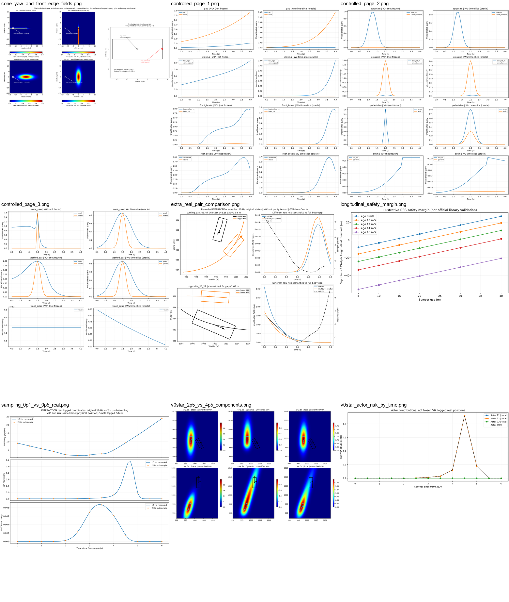
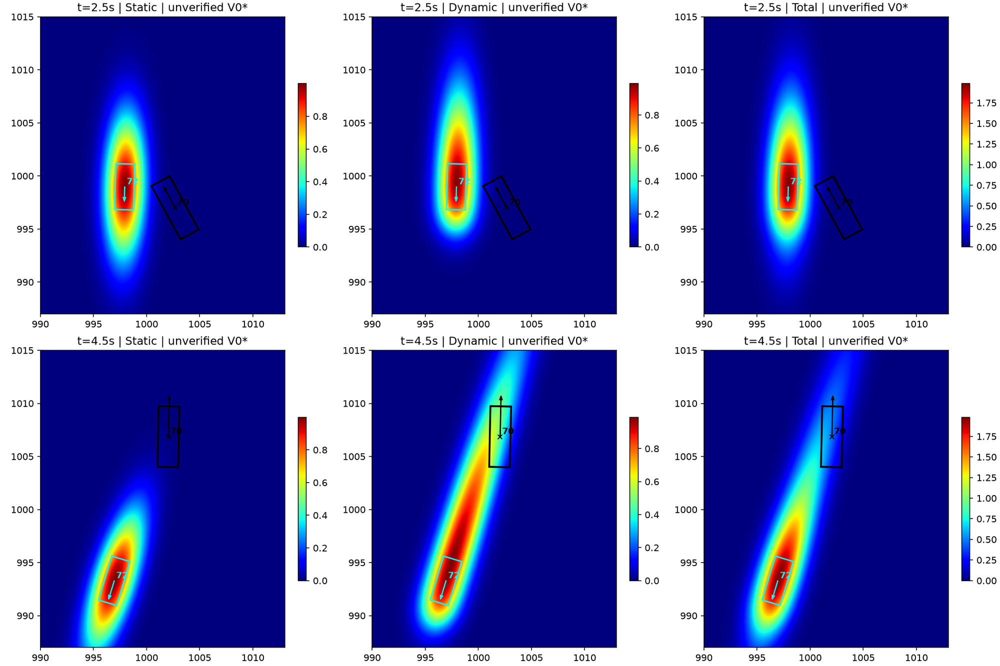
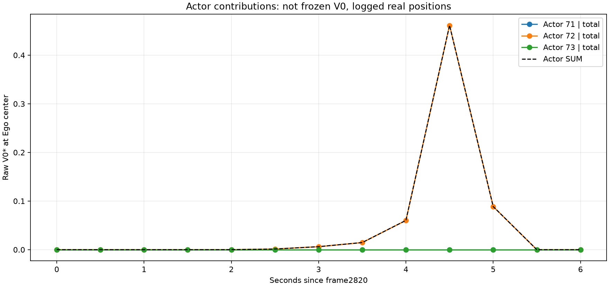
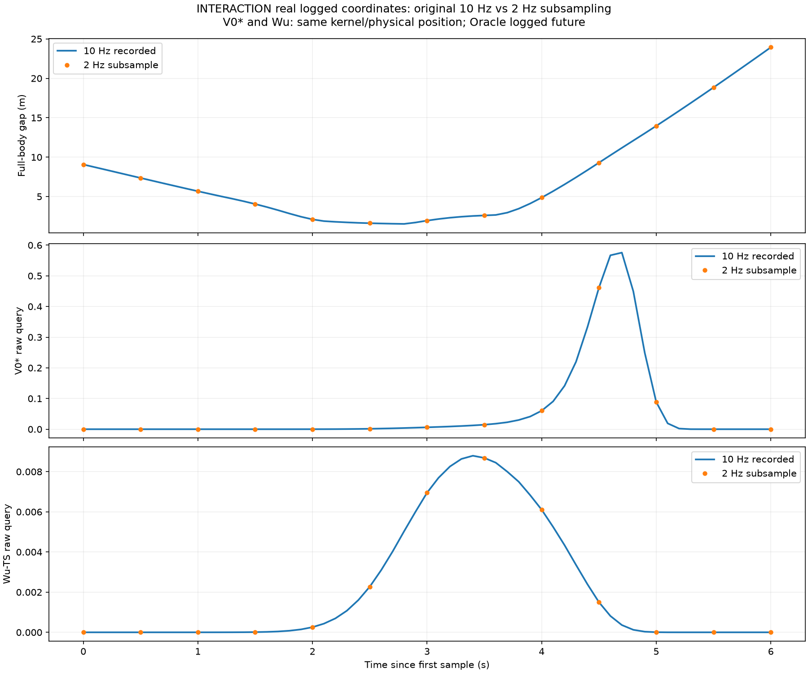
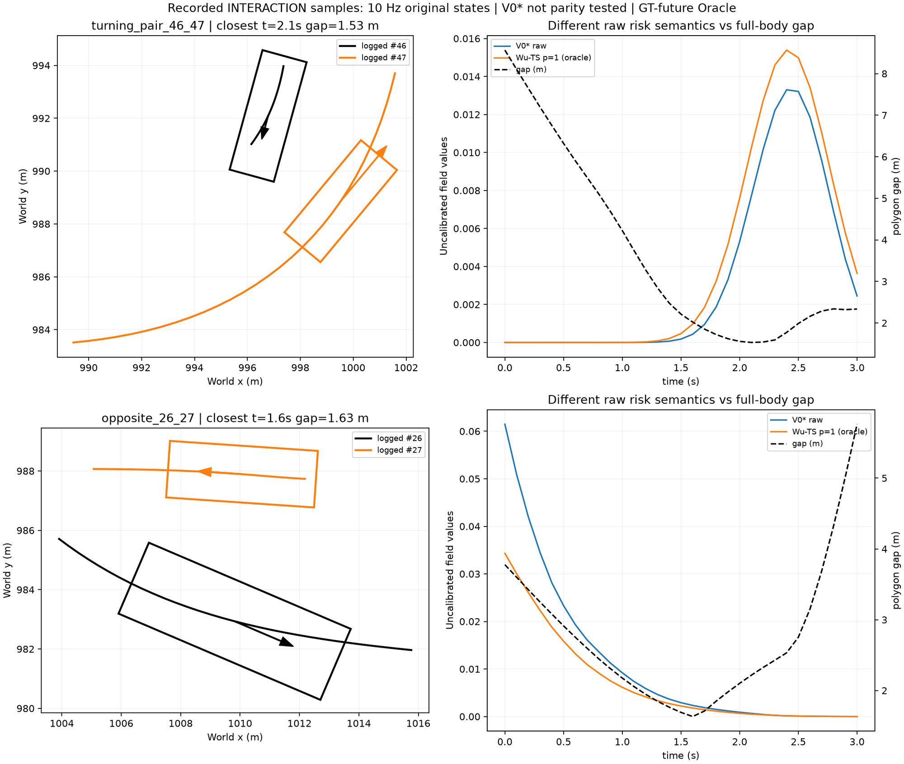
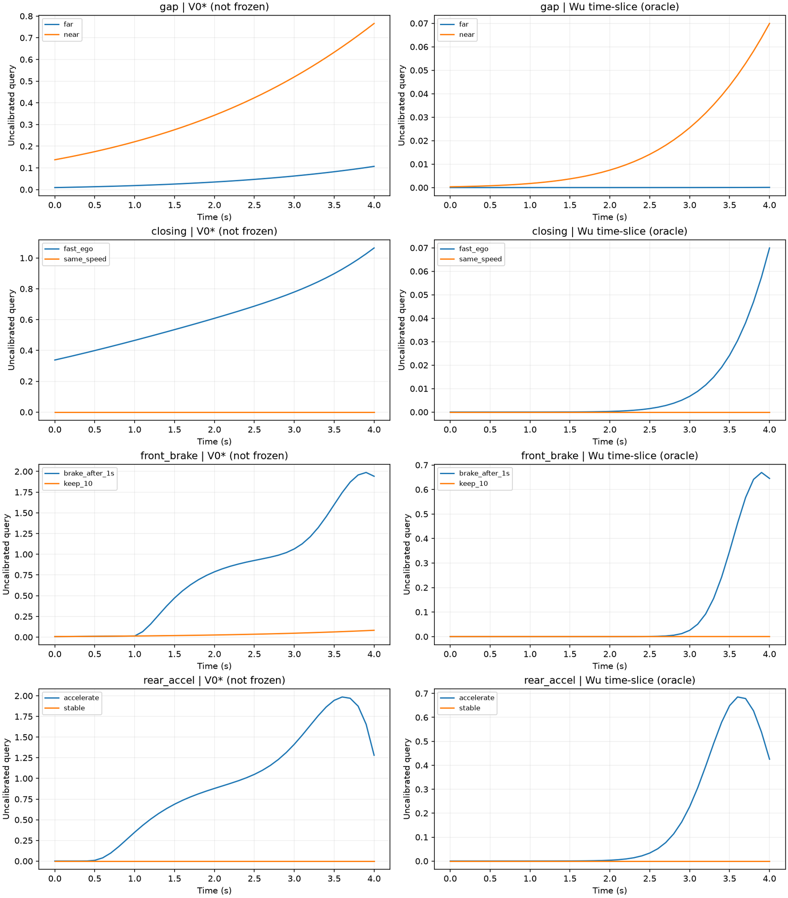
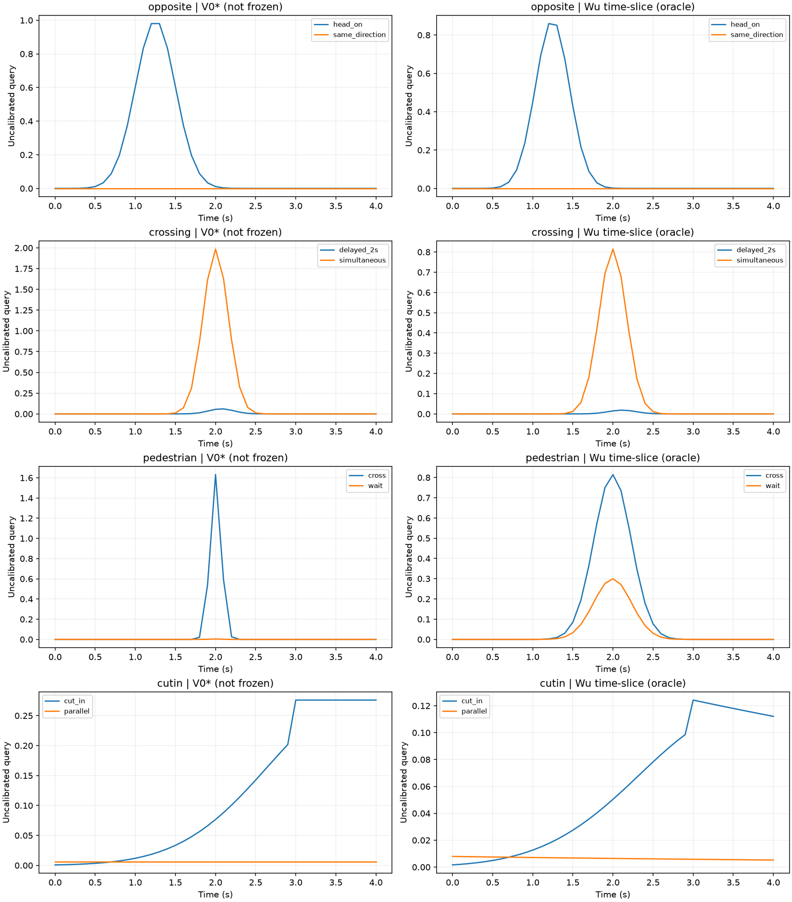
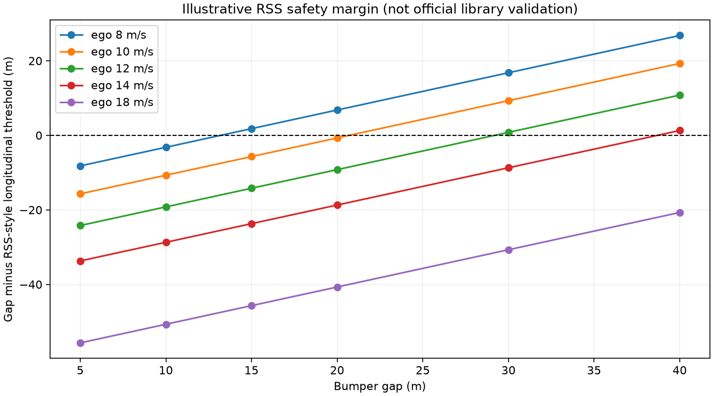

V0* has NOT passed frozen-V0 source-parity certification.
Every "V0*" value is a hand-off formula port, not the frozen Gaussian V0.
The Wu curve uses the single logged future mode, i.e. an offline Oracle, not a deployable predictor.
Local browser for the figures committed to
experiments/trajectory_risk_pilot_r2_20261013/figures/.
GitHub renders the same set inline in VISUAL_REVIEW.md.

overview_thumbnail.png Portfolio overview — contact sheet of every figure below.

v0star_2p5_vs_4p5_components.png Actor 72 anomaly, t=2.5s vs t=4.5s: Static / Dynamic / Total components on an equal coordinate ratio and a shared per-column colour scale. Body gap grows 1.62 m -> 9.30 m while the Dynamic component rises.

v0star_actor_risk_by_time.png Per-actor raw V0* at the ego-center query for Actors 71/72/73 plus the actor SUM.

sampling_0p1_vs_0p5_real.png Recorded INTERACTION 10 Hz vs 2 Hz subsample on the same real coordinates: full-body gap, V0* and Wu time-slice. Shows the peak the coarse sampling missed.

extra_real_pair_comparison.png Two further recorded INTERACTION motion structures (turning 46/47, oncoming 26/27): logged bodies, real velocity arrows, both risk queries and the synchronous gap.

controlled_page_1.png Controlled page 1: gap near/far, closing speed, front hard-brake, rear-car acceleration.

controlled_page_2.png Controlled page 2: oncoming vs same-direction, intersection simultaneous vs delayed, pedestrian wait vs cross, parallel vs cut-in.
cone_yaw_and_front_edge_fields.png Dedicated 2-D field figure: identical physical static obstacle at yaw=0 vs yaw=90 under the same V0* kernel, plus the front-edge miss counterexample where the body already overlaps but the ego-center query returns ~0.

longitudinal_safety_margin.png Illustrative longitudinal RSS-style margin (1-D ordered vehicles only; not an official library validation).